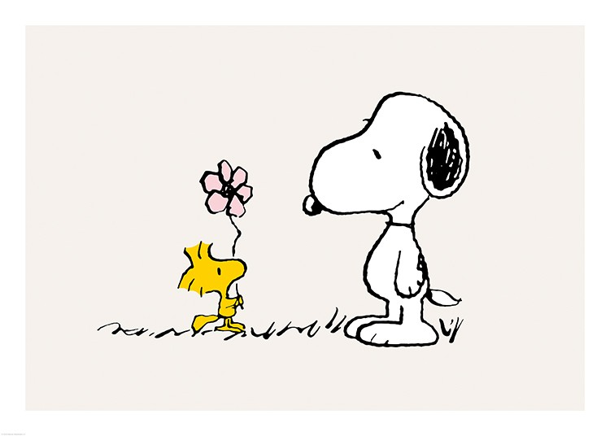
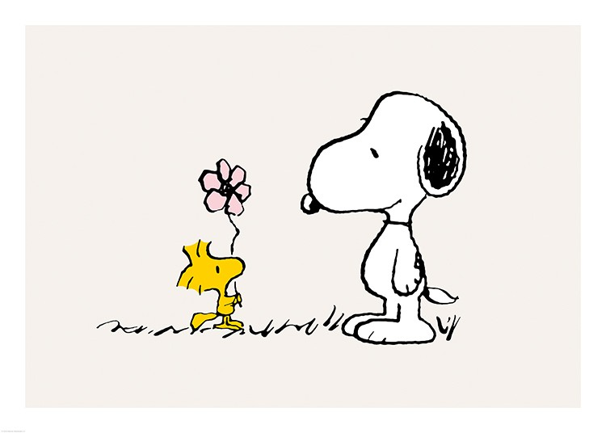

Charles "Charlie" Brown is the principal character of the comic strip Peanuts, syndicated in daily and Sunday newspapers in numerous countries all over the world. Depicted as a "lovable loser", Charlie Brown is one of the great American archetypes and a popular and widely recognized cartoon character. (Wikipedia)


 


Snoopy is a loyal, imaginative, and good-natured beagle who is prone to imagining fantasy lives, including being an author, a college student known as "Joe Cool", an attorney, and a World War I flying ace. (Wikipedia)